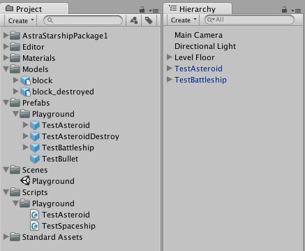
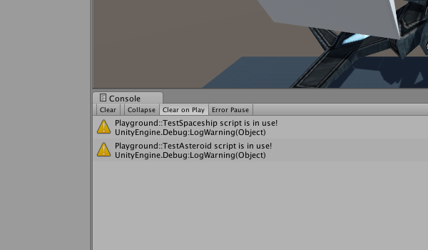
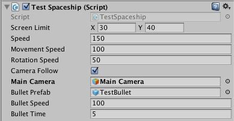
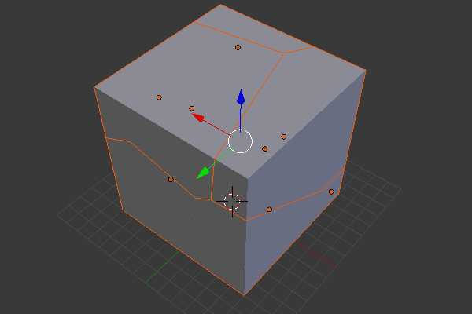

Este é o segundo post sobre o jogo que estou desenvolvendo no meu tempo livre, o Final Frontier. Neste post vou falar sobre como estou usando o playground para descobrir a mecânica do jogo e também como fiz um modelo 3D ser destruído.
O jogo está em desenvolvimento publicamente no GitHub, então dependendo de quando você ler este post pode ser que muita coisa tenha mudado. Mesmo assim, as dicas aqui podem ser aplicadas em seu projeto.
Como brincar no playground
Como disse no post anterior, o playground não é um protótipo. O playground é usado para experimentar ideias, enquanto o protótipo é usado para validar o gameplay. Por isso, existem algumas boas práticas que eu gosto de seguir aqui.
A primeira dica é deixar bem claro o que pertence ao playground no projeto. Como o playground pode fazer parte do projeto de um protótipo ou da versão final, é comum utilizar scripts e assets de test ou finais no playground. No meu caso eu estou usando este playground antes de iniciar o desenvolvimento do protótipo, então decidi separar prefabs e scripts em uma pasta "Playground".

Os scripts estão dentro de um namespace chamado "Playground", e quando usados exibem o log de warning abaixo. Este é uma dica que aprendi recentemente lendo a entrevista do John Romero, onde ele fala que é sempre bom exibir na tela o que está acontecendo, principalmente o que não é esperado. Como este projeto deve crescer e ter muitos scripts e prefabs, eu quero ter certeza de que algum prefab com script de playground será esquecido no jogo.

É sempre bom criar opções para debug visual enquanto o projeto está rodando e aproveitando os recursos do editor da Unity. Na imagem abaixo eu criei um Boolean chamado cameraFollow que pode ser habilitado durante a execução para fazer a câmera do jogo deixar de seguir a nave. Eu não coloquei o objeto da câmera dentro da nave para que durante sua movimentação não dê a impressão ser "dura". Isso vai fazer mais sentido quando implementar o controle completo da nave.

Destruindo objetos 3D
Destruição de objetos e cenário é algo que sempre quis implementar mas nunca tive uma oportunidade. Pode parecer algo muito complicado mas na verdade é simples de entender a idéia por trás. Basicamente você tem dois modelos: um normal e um "destruído", e quando o objeto é destruído você substitui pelo modelo destruído e aplica alguma física nos destroços se necessário.

Como eu quero utilizar apenas ferramentas e assets gratuitos neste projeto, escolhi utilizar o blender para fazer um moledo de um cubo inteiro e um cubo destruído. O video abaixo ensina como fazer isto no blender e como adicionar a física necessária na Unity, mas basicamente você precisa aplicar Cell Fracture com Noise no modelo e importar na Unity adicionando um Mesh Collider em cada pedaço.
Próximos passos
Vou tentar escrever um post sobre este projeto a cada duas semanas. Como costumo publicar um post por semana vou intercalar posts sobre o andamento do projeto com o conteúdo do blog, assim consigo falar do projeto e ainda mostrar técnicas e dicas que estou usando em seu desenvolvimento. Através desta tag você poderá ver todos os posts sobre o projeto.
Fique a vontade para baixar o projeto no GitHub e comentar aqui no post suas opiniões e sugestões. Para o próximo post pretendo implementar o controle da nave, spawn de asteroides pelo caminho e mais alguns detalhes no playground. Embora demore duas semanas para eu publicar o próximo post, você pode acompanhar meu trabalho no jogo pelo GitHub, pois sempre que possível vou trabalhar neste projeto durante a semana.